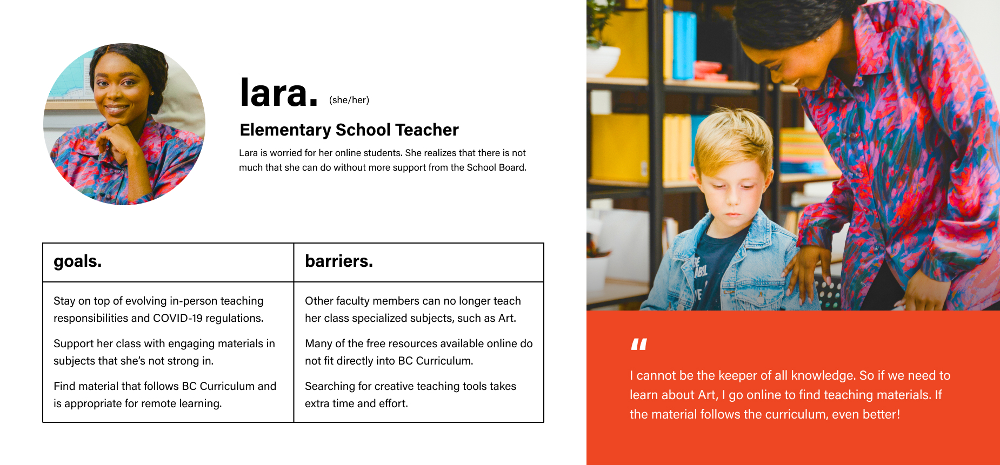

Client
Vancouver Art Gallery
Role
User Experience Designer
Duration
± Four Weeks
Tools
Figma + Adobe Creative Suite
Art Curator implements the technology of Augmented Reality (AR) to create a self-directed educational tool for secondary students. Art Curator is able to increase engagement for the gallery, while providing BC Educators with a stimulating and forward-looking resource that assists students in their online learning.

Collection Screen in Art Curator
Empathize + Understand Your User
In order to gain a deep understanding regarding our target audience, the team conducted 19 semi-structured interviews lasting approx. half-hour to an hour. Interviews were mainly conducted over Zoom, with a couple done over the text. We interviewed individuals who have created educational programs for children and/or are familiar with the best approaches to engage them.
— Educators need more resources, especially low-barrier ones, to connect their students with creative art education. They are currently overwhelmed by having to teach their students about subjects previously taught by dedicated professionals.
— For many parents, lesson planning is not possible due to their own lack of understanding of the topic and the time commitment. Buying extra supplies is not in the budget, especially with the current economic struggles related to the pandemic.
— Open-ended interactive activities that give children autonomy do well. Children are more engaged in the way something is presented to them by the channel, as opposed to the actual content of it.
Teacher Persona for Art Curator
Working Parent Persona for Art Curator
Ideate
The team evaluated each solution based on UX Principles and their visual aesthetics. Our framework based on UX Principles allowed the team to impartially evaluate each solution and ensured that the needs of our target audience can be met. Subsequently, we iterated and converged on our UX Flowchart.
UX Flowchart for Art Curator
Empathize (Again)
The team conducted another research regarding UX Laws and the psychology behind them. I reiterated my Wireframing based on our research findings.

Wireframes for Art Curator
Ergonomic Matters
My initial menu had ergonomic issues due to its layout and placement on the screen. It was laid out on a difficult position for users to reach, especially if they hold their phone with only one hand. Further research on hand placement and areas that have the easiest reach allowed me to experiment with a radial menu.
Radial Menu Positioned Aptly for Right-Handed and Left-Handed Users
Educate Users In Context
In order to offer Art Curator's main function to our user as soon as possible, the team conducted research on the working memory of children and the Hicks Law. We decided to simplify the decision-making process for the user. I resolved to break down complex tasks to one simple step at a time and emphasize the given instructions. As a result, the onboarding process felt manageable and straightforward.
Simple Onboarding Process in Art Curator
Avoid Information Overload
In order to include a large amount of information, the user was initially presented a wall of text all at once. This was an issue, as it hindered the user from absorbing information and acted as a barrier to the educational aspects of Art Curator. After an extensive research on Miller's Law, I decided to chunk information with swipe cards. Chunking information eased the user's cognitive load.
Text Presented as Chunks to Aid Absorbing Information
Implement
After an extensive process of reiteration and rapid prototyping, I produced high-fidelity prototypes for the mobile application. The implementation of Art Curator solved the gallery’s issue of inaccessibility medium that can connect children with arts learning. It fulfilled the team's three core insights, as it was an engaging channel for children to interact with the gallery and its collections. It aided students in studying about Indigenous Arts that has been a principal content in BC Curriculum. In addition, the application required little set-up which was perfect for all educators, whether they are a teacher and/or parent.

High-Fidelity Prototypes for Art Curator
Takeaways
The end product of Art Curator is grounded on UX Research, reminding me that good design always develops in tandem with its User and their requirements. The tedious process of UX Research is often disregarded. However, a good UX Research makes all the difference to the end product and its process should be executed with care and forethought.